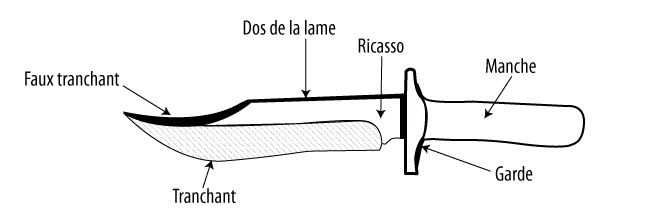
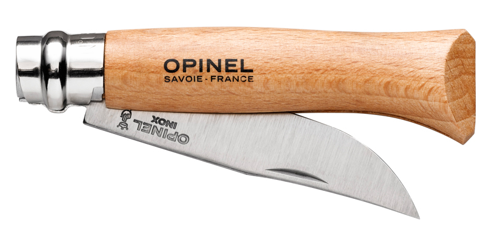

<div class="container">
  <div id="page1">
    <h2>Qu'est-ce qu'un couteau ?</h2>
      <div class="blockquote text-center">
        C'est un outils, une extension de nos ongles. Il sert à couper des choses que l'on ne peut
découper avec ses mains (il ne scie pas), mais c'est aussi une chose dangereuse, à manipuler avec
soins. Lorsqu'un adulte vous donne un couteau, c'est une marque de respect qui apporte le droit
d'être fier, mais aussi le devoir d'être très prudent en retour. Il n'aime ni l'eau, ni trainer par terre.
        <br />
        <ul>
        <li><b>le couteau sert à :</b> couper sa viande, éplucher un fruit, écorcer du bois, couper de la ficelle.</li>
        <li><b>le couteau ne sert pas à :</b> scier du bois, jouer, menacer ou être lancé.</li>
        </ul>
          
      </div>
    <h2>Quelles règles de sécurité ?</h2>
      <div class="blockquote text-center">
          <ul>
              <li><b>Ne jamais courir</b> avec un couteau dans les mains, il faut le replier ou le ranger dans son étui.</li>
              <li><b>Ne jamais pointer</b> de couteau vers un être vivant (animal, insecte, ami scout).</li>
              <li><b>Bien regarder autour de soi</b> s'il n'y a personne à côté, et sans faire de grands gestes !</li>
              <li><b>Ne jamais laisser ses doigts à côté</b> de la lame, on pourrait se couper !</li>
              <li>Ne jamais couper quelque chose avec la lame vers <b>son ventre ou son corps</b></li>
              <li>Sur les Opinels : on met <b>la bague de sécurité !</b></li>
          </ul>
          
      </div>
      <h2>Quels gestes sécurisés ?</h2>
        <div class="blockquote text-center">
            <ul>
                <li>Plein poing : je ferme ma main dessus, je ramasse mon index et mon pouce, force et endurance.</li>
                <li>Levier-torse : je tourne le couteau de 180° (demi-tour) pour avoir la lame vers ma main et je
travaille soit en collant le manche contre mon ventre, soit en laissant la force « exploser ».</li>
                <li>Blocage-genou : le dos de la lame <b>sous le genoux</b>, dans le creux de la rotule, on tire l'objet que
l'on coupe vers soi en variant l'angle pour enlever plus ou moins de matière.</li>
                <li>Bâtonnage : on plante la lame dans une branche et on bâtonne avec un morceau de bois</li>
            </ul>
            NB : quand on écorce ou taille du bois il vaut mieux poser l'objet : meilleure prise et meilleure stabilité
        </div>
      <h2>Réalisations</h2>
      écorcer un bâton (50 cm), le tailler en pointe donne un piquet. Le tailler sur deux faces (double
biseau) donne une pointe en V, c'est un coin à bois (chanfrein à fond sur le haut !). Et quand on
touche sa bille, pourquoi pas essayer une cuillère ? Le « bol » se creuse avec une gouge en calant
bien l'objet !
      <br />
      Allez voir la vidéo (18 minutes) pour voir ces explications
de façon vivante.
  </div>
</div>
